CSS Foundations
CSS is made of rules these are the selector and a semi-colon separated list declarations, with each of those declarations been made up of a property:value pair

Selectors
Selectors refer to the html element to which the CSS rules apply. The following list are the most common:
Universal Selector
This will select elements of any type and the syntax(structure) is an asterisk. In the below example every element would have the color: purple; stye applied to it.
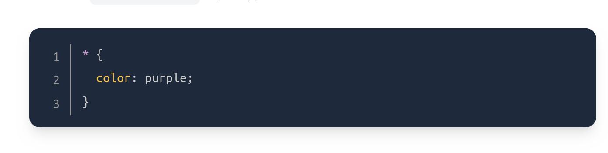
Type Selectors
A type selector will select all elements of the given element type. The syntax would be the given element. The example belows shows that < div > would be selected and not < p >
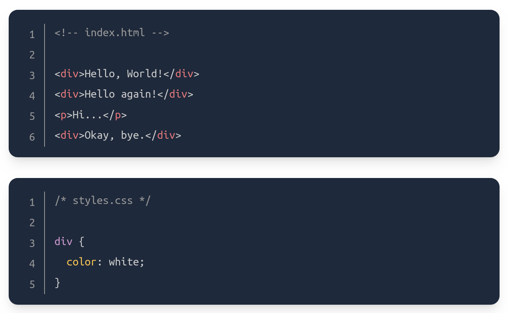
Class Selectors
These will select anything made using < div class >in the given quotations. The first example shows the adding of a class and the second is the class selector.
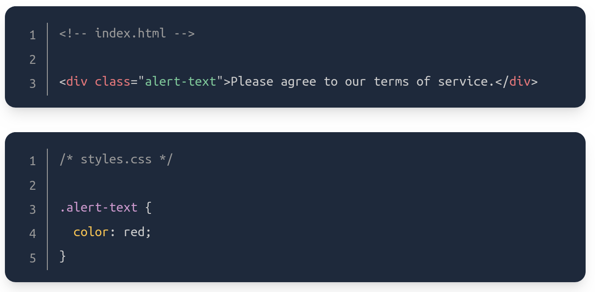
The syntax is a period immediately followed by the class attribute (the case sensitive quoted word). This example it would be alert-text. You can also add multiple classes to the attribute listed with just a space.
ID Selectors
These are similar to class selectors, the difference is that an element can only have one ID. Using < div id ="" and a #"" instead of a full stop.
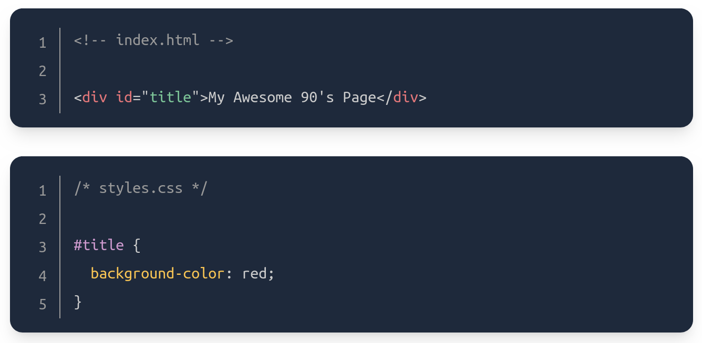
Don't overuse these, can use class instead.
The Grouping Selector
If two or more groups of elements share some of the same style declarations then we can use a comma-separated list to cut down on repetition.
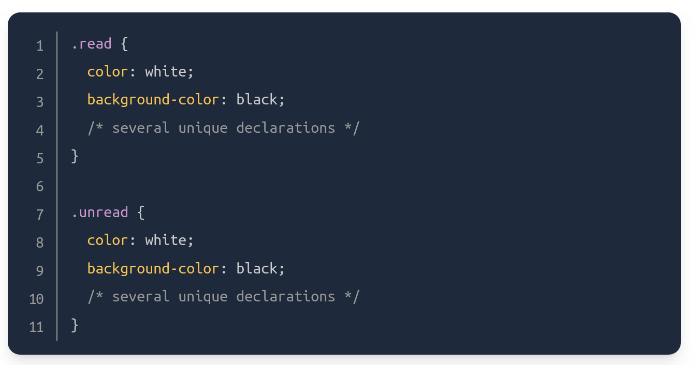
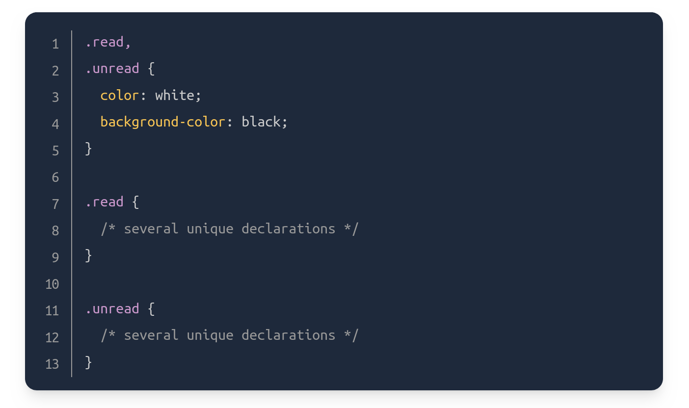
Both of the examples above have the same effect, it condenses the code and makes it easier to edit color/background color for both at once.
Chaining Selectors
Selectors can be chained together as a list without any separation using a fullstop as before. For example if you had two classes that looked liked "div class="subsection header">Latest Posts< /div" and "p class="subsection preview". So if you wanted to apply a rule with classes that included subsection and header then the following syntax would look like:
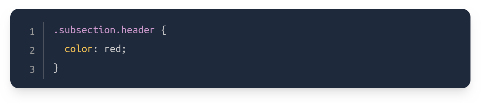
You can do the same with the id class by just placing a # before instead of a full stop:
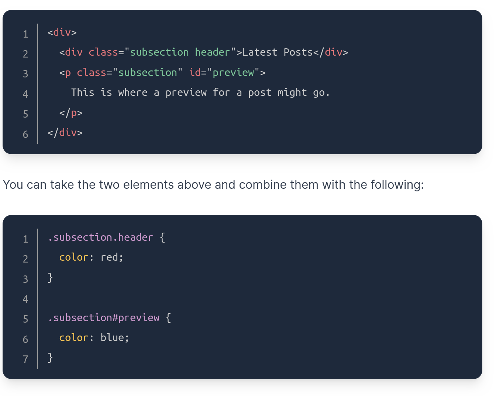
In general, you can’t chain more than one type selector (different to class) since an element can’t be two different types at once. For example, chaining two type selectors like div and p would give us the selector divp, which wouldn’t work since the selector would try to find a literal < divp > element, which doesn’t exist.
Descendant Combinator
Combinators allow us to combine multiple selectors at once, differently than chaining or grouping. There are four types of combinators but are only going to focus on Descendant. This selector will only work if they have an ancestor (parent, child, grandparent etc) that matches the previous selector.
So .ancestor .child would only select an element with the class .child as long as .ancestor came before it and would ignore all the .child on their own or without an ancestor
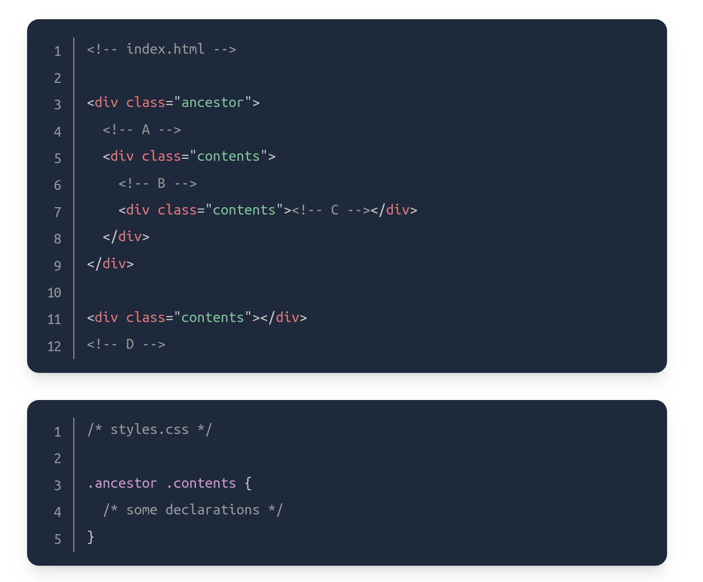
So only class B and C would have been selected in the above example. There’s really no limit to how many combinators you can add to a rule, so .one .two .three .four would be totally valid. This would just select an element that has a class of four if it has an ancestor with a class of three, and if that ancestor has its own ancestor with a class of two, and so on. You generally want to avoid trying to select elements that need this level of nesting, though, as it can get pretty confusing and long, and it can cause issues when it comes to specificity.
Commonly Used Properties
Color and background-color
Color sets the element text color and the background-color sets the color of the background. Both of these properties can accept several values, including HEX RGB and HSL value which look like: color: #1100ff; color: rgb(100, 0, 127); color: hsl(15, 82%, 56%);
Use this link to refer to the different colors and ways they can be implemented.
Typography basics and text-align
font-family can be a single value or a comma separated list of values. Each font can will fall into two categories, either a "font family name" wrapped in quotes due to the whitespace or a generic family name which uses hyphens if necessary eg "Times New Roman" and sans-serif. If a browser dos'nt support the font then it will use the next supported one. Using the values starting with the font you want to be used the most and ending with a generic font family as a fallback.
font-size 22px will set the size of the font, making sure there is no whitespace between the 22 and px
font-weight affects boldness pending font support. This can be a keyword or a number 1 and 1000 eg font-weight: bold font-weight: 700
text-align aligns text within an element eg text-align: center
Image height and width
If you want to adust an images height and width without messing up proportions, you would use the value "auto" eg
img {
height: auto
width: 500px;
}
Explicitly stating a height and width will stop drastic shift of the page when an image loads in later.
Adding it all to CSS to HTML
There are three ways to add the above to HTML.
External CSS
This is the most common method and involves creating a separate CSS file.
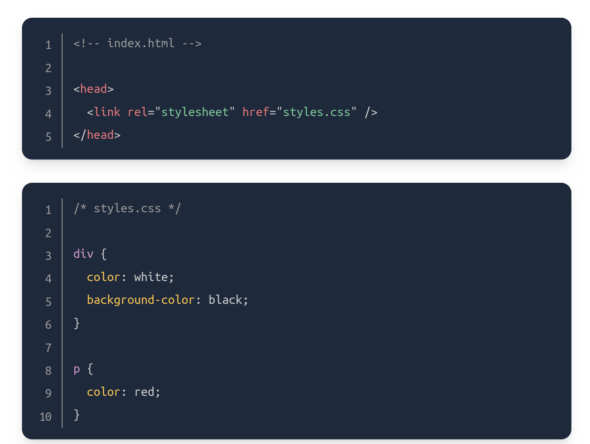
In the head of the HTML we add the href attribute containing the location of the CSS file and the HTML file itself. The rel attribute is needed to specify the relationship. The name of the CSS file can be anything but style.css is a very common one. Pros are that it keeps things neat and stops the original HTML from bloating.
Internal CSS
This involves adding the CSS into the HTML directly. The syntax is exactly the same but uses no rel or links.
Inline CSS
This makes it possible to add styles directly to HTML elements though it is not recommended as the code writing becomes quite a lot different ie no selectors.
< body>
< div style="color: white; background-color: black;">...
It can work just fine if you want to change the style for one or two elements but can quickly become confusing and bloated.
The Cascade
Unexpected behaviors can occur even when your code is perfect, this can be due to the browser default settings and the fact that every browser runs things slightly differently from one another. The cascade is what determines what rules actually get applied and there are factors that CSS uses to do this. Three of the factors are:
Specificity
In simple terms the more specific a CSS declaration becomes the more it will take over broad ones. From the selectors that have been learnt so far the hierarchy goes:
- ID Selectors
- Class Selectors
- Type Selectors
A declaration with two class selectors will be chosen over one, and one with an ID selector will take precedence over the two class. The combinator does not add anything to specificity so that combined with a chaining selector would produce the same specificity. The universal-selector * has no specificity so is beaten by everything.
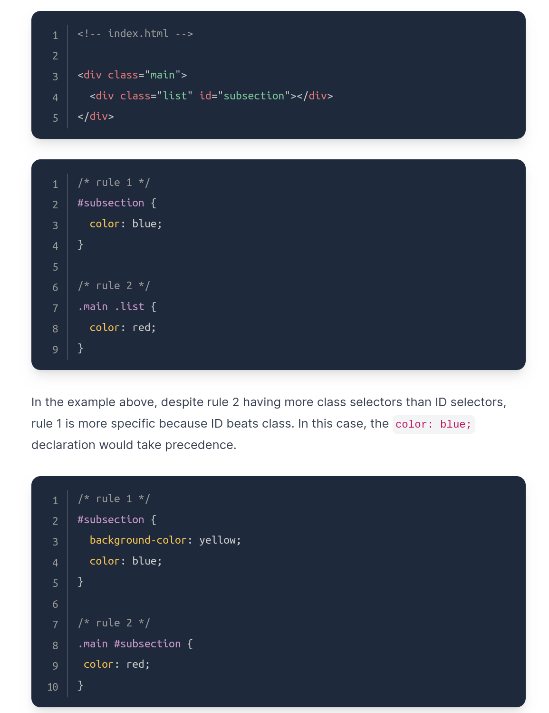
Inheritance
Most elements will inherit Typography based properties eg color, font-size, font-family etc unless we typically target them not to. Most other properties aren't automatically inherited.
Rule Order
When there is absolutely no other specificity and the declarations at he exact same, then CSS will apply the last rule that was defined. So in this example yellow would be applied.
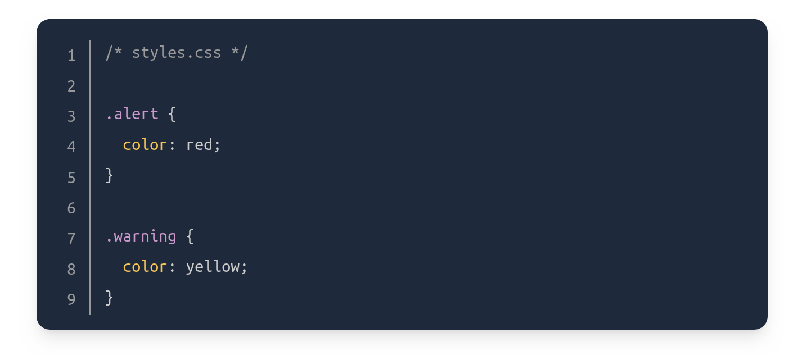
Inspecting HTML and CSS
Inspecting and debugging your frontend code is critical to development.
The Inspector
You can right click anywhere on a webpage and inspector the element. When an element is selected the styles tab will show all the currently applied styles. This tab also allows you to edit the web page in real time. It will also show you if there are specificity conflicts and tell you which selector it is using. The element that is overwritten will have a score through it. It is extremely useful for testing out code without having to reload the webpage over and over. This dosnt actually change the source code. CTRL + shift + C opens the inspector on any given web page.
Visit this page if you want to a refresh on how to use the tools.
The Box Model
Boxes are used for everything concerning positioning and layout. They are crucial for getting everything on a web page exactly where you want them. Everything is a rectangle box, they can have boxes within boxes, and sit along side each other. By placing borders around everything using the * border: 2px solid red; you can see these boxes. The only real complication is that there are many ways size these boxes and the space between them using padding, margin and border.
- padding - increases the space between the border of a box and the content of the box.
- margin - increases the space between the borders of a box and the borders of adjacent boxes.
- border - adds space (even if it’s only a pixel or two) between the margin and the padding.
There are two types of displays boxes; block and inline. The type refers to how the box behaves in terms of page flow and in relation to other boxes on the page. Boxes have an outer display and an inner display.
Outer type block
If a display has an outer display type of block, then;
- the box will break into a new line
- width and height properties will be expected
- will cause other elements to be pushed away from it
- If width is not stated, it will extend in the inline direction to fill space in the available container
Some HTML elements, such as < h1 > and < p > use block as their display default By default, block elements will appear on the page stacked atop each other, each new element starting on a new line.
Outer type inline
If inline then:
- Box will not break onto a new line
- width and height properties will not apply
- Top and bottom padding, margins and borders will apply but will not cause other inline boxes to move away from the box
- Left and right padding, margins and borders will apply and will cause other inline boxes to move away from the box
HTML elements: a, span, em and strong use inline as their default. They appear in line with whatever elements they are placed beside. A clear example of an inline element is a link. The link’s text will sit alongside other words in that paragraph. Additionally, padding and margin behave differently on inline elements. In general, you do not want to try to put extra padding or margin on inline elements.
Inner
The inner display type dictates how elements inside that box are laid out.
As default and without any other instruction, the elements inside a box are also laid out in normal flow and behave as block or inline boxes. You can change the inner display type for example by setting display: flex;. This changes the inner type display to flex and keep the outer display type block.
Examples of different display types
The example below has three different HTML elements, all of which has an outer display type block:
- A paragraph with a border added in CSS. The browser renders this as a block box. The paragraph starts on a new line and extends the entire available width.
- A list, which is laid out using display: flex. This establishes flex layout for the children of the container, which are flex items. The list itself is a block box and — like the paragraph — expands to the full container width and breaks onto a new line.
- A block-level paragraph, inside which are two < span > elements. These elements would normally be inline, however, one of the elements has a class of "block" which gets set to display: block.
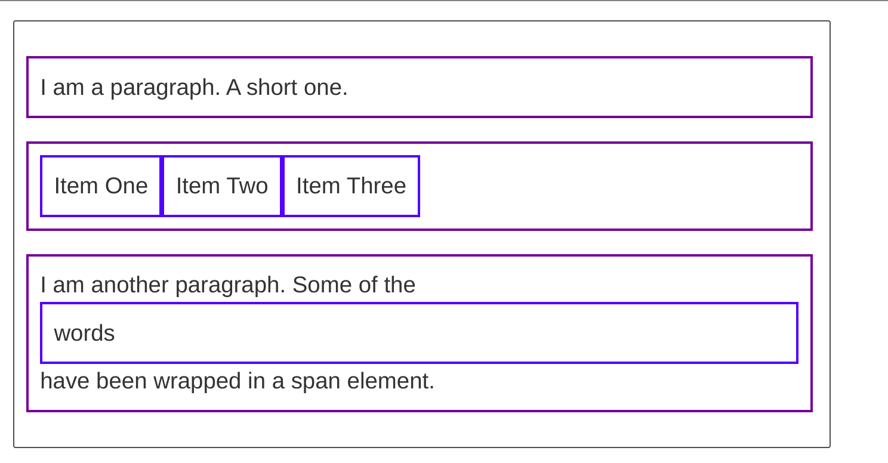
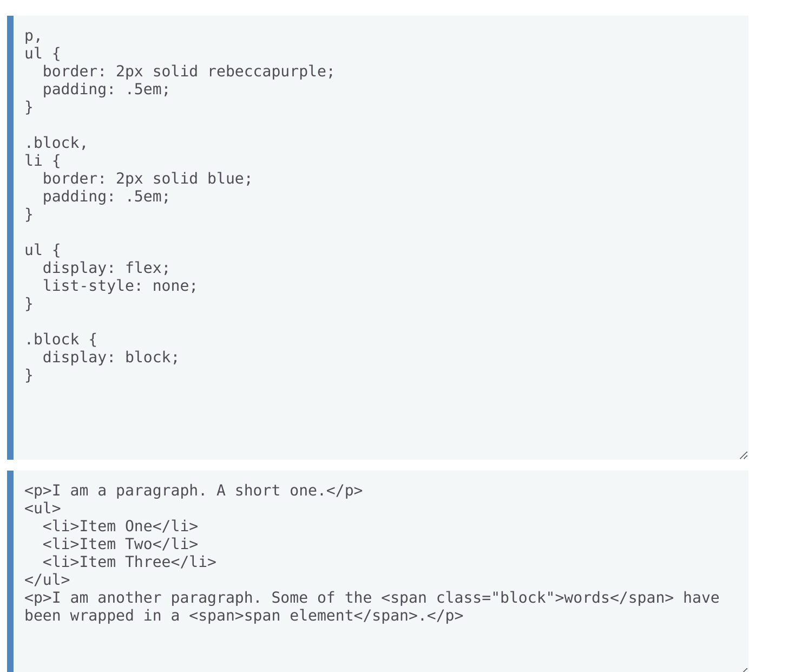
This is all done by changing the value of the display to either inline or block, this in turn changes how it will be displayed next to other elements.
Using display: inline-block
display: inline-block is a special value of display, which provides a middle ground between inline and block. Use it if you do not want an item to break onto a new line, but do want it to respect width and height and avoid the overlapping seen above. The width and height properties are respected.
padding, margin, and border will cause other elements to be pushed away from the box.
It does not, however, break onto a new line, and will only become larger than its content if you explicitly add width and height properties.
A good example of all three can be found here
There are two types of boxes in CSS. The standard box and the alternate box.
Standard box
If a standard box had the following properties:
.box {
width: 350px;
height: 150px;
margin: 10px;
padding: 25px;
border: 5px solid black;
}
The actual space taken up by the box will be 410px wide (350 + 25 + 25 + 5 + 5) and 210px high (150 + 25 + 25 + 5 + 5).
Alternate box
In the alternative box model, any width is the width of the visible box on the page. The content area width is that width minus the width for the padding and border. No need to add up the border and padding to get the real size of the box.
To turn on the alternative model for an element, set box-sizing: border-box
So if a box has the following properties: .box {
width: 350px;
inline-size: 350px;
height: 150px;
block-size: 150px;
margin: 10px;
padding: 25px;
border: 5px solid black;
}
Now, the actual space taken up by the box will be 350px in the inline direction and 150px in the block direction.
Margins, padding and borders
MARGIN
The above commands that we have been using have all been shorthands and allow us to set all four sides of the box at once. These can be worked upon by simply adding top right and bottom respectively after each element:
- margin-top
- margin-right
- margin-bottom
- margin-left
These values can all be changed individually to push the box around.
Depending on two margins which touch, they can have an impact on each other and the results will be different depending on the size:
Two positive margins will combine to become one margin. Its size will be equal to the largest individual margin.
Two negative margins will collapse and the smallest (furthest from zero) value will be used.
If one margin is negative, its value will be subtracted from the total.
The main thing to remember is that margin collapsing is a thing that happens if you are creating space with margins and don't get the space you expect.
Click here for more margin stuff
BORDERS
Borders size can be adjusted each side individually just like the above. However their width, style and color can also be changed:
- border-width
- border-style
- border-color
- eg border-top-style
PADDING
Uses the same margin elements and allows what ever is inside the box to be pushed around, however you can not have a negative padding
All of the above applies to block boxes, but some of those can apply to inline boxes to such as ones created by a < span > element
You could place a span inside a paragraph and top and bottom margin, padding, and border are respected but don't change the relationship of other content to our inline box. The padding and border overlap other words in the paragraph. The left and right padding, margins, and borders move other content away from the box.
Divs and spans
These two elements can be seen as empty containers that don't effect HTML on their own, however they can be very useful.
Div is a block level element by default. It is commonly used as a container element to group other elements. Divs allow us to divide the page into different blocks and apply styling to those blocks.Span is an inline-level element by default. It can be used to group text content and inline HTML elements for styling and should only be used when no other semantic HTML element is appropriate.